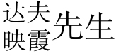

：我们消息实在太不灵通，待到知道了 令郎的诞生，已经在四十多天之后了。然而祝意是还想表表的，奉上粗品两种，算是补祝弥月的菲敬，务乞
哂收为幸。
鲁迅 许广平 启上一月八日
注 释
[1] 王映霞（1908—2000） 浙江杭州人。当时为郁达夫夫人，1929年11月产一女儿，鲁迅寄赠一件绒线衫和一条围巾以为祝贺。
300108 致郁达夫、王映霞
第12卷 · 一九三〇年

：我们消息实在太不灵通，待到知道了 令郎的诞生，已经在四十多天之后了。然而祝意是还想表表的，奉上粗品两种，算是补祝弥月的菲敬，务乞
哂收为幸。
鲁迅 许广平 启上一月八日
注 释
[1] 王映霞（1908—2000） 浙江杭州人。当时为郁达夫夫人，1929年11月产一女儿，鲁迅寄赠一件绒线衫和一条围巾以为祝贺。
云端书架：登录后可收藏本篇